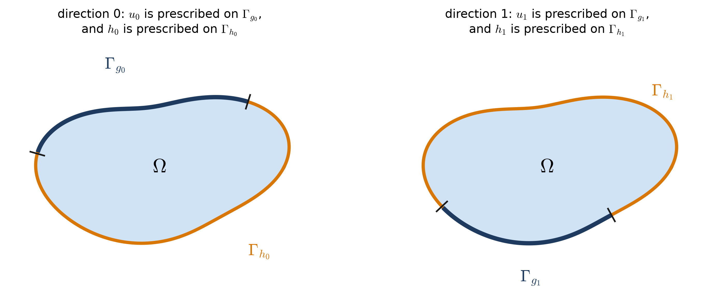

26 Class 26: Linear Elasticity and the Principle of Virtual Work
The strong form of linear elasticity, and its weak form
To this point, the unknown in every problem has been a scalar, such as a temperature. In linear elasticity, the unknown is the displacement \(\underline{u}\) of each point of a solid body, which is a vector with one component for each spatial direction. In this class, we state the boundary value problem of linear elasticity and convert it into a weak form, following the same steps that were used for the Poisson Equation in Class 4. In elasticity, the weak form has a physical meaning: it is the principle of virtual work.
The appendix Linear Elasticity I describes stress, strain, and the elasticity tensor in more detail, with interactive figures, and Linear Elasticity II carries the problem through the finite element method.
26.1 Displacement, strain, and stress
Four quantities appear in the problem.
- \(\underline{u}\) is the displacement, the distance that each point of the body moves, with components in the \(x\), \(y\), and (in three dimensions) \(z\) directions.
- \(\underline{\underline{\varepsilon}}\) is the strain tensor, which describes how the material is stretched and sheared.
- \(\underline{\underline{\sigma}}\) is the stress tensor, which describes the forces per unit area that act within the body. Its component \(\sigma_{ij}\) is the \(i\)-component of the force per unit area on a surface whose outward normal points in the \(j\) direction.
- \(\underline{\underline{\underline{\underline{C}}}}\) is the elasticity tensor, a property of the material that relates the stress to the strain.
The strain is computed from the gradient of the displacement, and the stress is computed from the strain:
\[ \underline{\underline{\varepsilon}} = \frac{1}{2}\left(\nabla\underline{u} + \nabla\underline{u}^T\right), \qquad \underline{\underline{\sigma}} = \underline{\underline{\underline{\underline{C}}}}\;\underline{\underline{\varepsilon}} . \]
The second relation is called the generalized Hooke’s law. It is the elasticity counterpart of Fourier’s law, \(\underline{q} = -\underline{\underline{\kappa}}\nabla u\), which related the heat flux to the temperature gradient.
These relations are clearer in index notation:
\[ \varepsilon_{ij} = u_{(i,j)} := \frac{u_{i,j} + u_{j,i}}{2}, \qquad \sigma_{ij} = c_{ijkl}\,\varepsilon_{kl} . \]
The parentheses in \(u_{(i,j)}\) denote the symmetric part of \(u_{i,j}\). The strain uses only the symmetric part of the displacement gradient, because for small deformation strain the remaining part describes a rotation of the material, which does not stretch or shear it. In \(\sigma_{ij} = c_{ijkl}\,\varepsilon_{kl}\), the indices \(k\) and \(l\) are repeated, so the expression is summed over both of them. Each stress component therefore depends on every strain component. The elasticity tensor has four indices, so it has \(3^4 = 81\) components in three dimensions, where the conductivity \(\kappa_{ij}\) had only \(3^2 = 9\).
Finally, note that for the one-dimensional case, the equations of linear elasticity are the same as the Poisson equation.
26.2 Properties of the elastic coefficients
The elastic coefficients have two properties.
(1) Symmetry.
\[ \begin{aligned} c_{ijkl} &= c_{klij} && \text{(major symmetry)} \\ c_{ijkl} &= c_{jikl}, \quad c_{ijkl} = c_{ijlk} && \text{(minor symmetries)} \end{aligned} \]
(2) Positive definiteness. For every symmetric \(\psi_{ij}\),
\[ c_{ijkl}\,\psi_{ij}\,\psi_{kl} \ge 0, \qquad\text{and}\qquad c_{ijkl}\,\psi_{ij}\,\psi_{kl} = 0 \;\Longrightarrow\; \psi_{ij} = 0 . \]
These properties ensure that the stress tensor \(\underline{\underline{\sigma}}\) is symmetric, and that the stiffness matrix \(\underline{\underline{K}}\) is symmetric and positive definite.
- The first minor symmetry, \(c_{ijkl} = c_{jikl}\), gives \(\sigma_{ij} = \sigma_{ji}\). The second, \(c_{ijkl} = c_{ijlk}\), is consistent with the strain being symmetric. Together, the minor symmetries reduce the 81 components to 36.
- The major symmetry plays the role that \(\kappa_{ij} = \kappa_{ji}\) played in Class 23: it makes the bilinear form, and therefore the stiffness matrix, symmetric. It reduces the number of independent coefficients to 21.
- Positive definiteness plays the role of a positive definite conductivity. The quantity \(\tfrac{1}{2}\,c_{ijkl}\,\varepsilon_{ij}\,\varepsilon_{kl}\) is the strain energy stored in a unit volume of the material, and positive definiteness states that any deformation of the material stores energy.
26.3 Boundary conditions in each direction
In the Poisson Equation, the boundary was divided once, into \(\Gamma_g\) and \(\Gamma_h\). In elasticity, each component of the displacement has its own boundary condition, so the boundary is divided once for each direction. For each \(i = 0, \dots, n_{sd}-1\), where \(n_{sd}\) is the number of spatial dimensions,
\[ \Gamma = \overline{\Gamma_{g_i}\cup\Gamma_{h_i}}, \qquad \Gamma_{g_i}\cap\Gamma_{h_i} = \emptyset , \]
where the displacement component \(u_i\) is prescribed on \(\Gamma_{g_i}\), and the traction component \(h_i\), a force per unit area, is prescribed on \(\Gamma_{h_i}\). As in Figure 26.1, the division can be different for each direction.

A roller support is a common example. A roller on a horizontal surface prevents a point from moving vertically, but allows it to slide horizontally without resistance. At such a point, \(u_1\) is prescribed, so the point belongs to \(\Gamma_{g_1}\), and the horizontal traction is zero, \(h_0 = 0\), so the same point belongs to \(\Gamma_{h_0}\). A free surface carries no load in either direction, so it belongs to both \(\Gamma_{h_0}\) and \(\Gamma_{h_1}\), with \(h_0 = h_1 = 0\).
26.4 The strong form
The boundary value problem of linear elasticity is then
\[ (\mathrm{S})\qquad \begin{aligned} &\text{Given } f_i:\Omega\to\mathbb{R},\; g_i:\Gamma_{g_i}\to\mathbb{R},\; h_i:\Gamma_{h_i}\to\mathbb{R}, \text{ and } c_{ijkl}:\Omega\to\mathbb{R}, \\ &\text{find } u_i:\bar{\Omega}\to\mathbb{R} \text{ such that} \\[2pt] &\qquad \sigma_{ij,j} + f_i = 0 \quad \text{in } \Omega \\ &\qquad u_i = g_i \quad \text{on } \Gamma_{g_i} \\ &\qquad \sigma_{ij}\,n_j = h_i \quad \text{on } \Gamma_{h_i} \\[2pt] &\text{where } \sigma_{ij} = c_{ijkl}\,\varepsilon_{kl} \text{ and } \varepsilon_{kl} = u_{(k,l)} = \tfrac{1}{2}\left(u_{k,l} + u_{l,k}\right) . \end{aligned} \]
Here \(c_{ijkl}\) is symmetric and positive definite, \(f_i\) is the body force per unit volume (for example, the weight of the material), \(g_i\) is a prescribed displacement, \(h_i\) is a prescribed traction, and \(n_j\) is the outward unit normal. In vector notation, the differential equation is \(\nabla\cdot\underline{\underline{\sigma}} + \underline{f} = \underline{0}\). It states that the forces on every small piece of the body are in balance. Since \(i\) is a free index, (S) contains one equation for each direction, so a two-dimensional problem has two coupled differential equations, and a three-dimensional problem has three.
26.4.1 The balance of forces on a small box
The differential equation \(\sigma_{ij,j} + f_i = 0\) is a balance of the forces on a small box of material, divided by the volume of the box. The widget below shows this balance for two stress fields that satisfy it exactly. The first is the exact solution for a steel cantilever, described in the appendix Linear Elasticity I. The cantilever is \(L\) = 400 mm long, \(D\) = 100 mm deep, and \(t\) = 10 mm thick, and it has a downward load \(P\) = 8 kN at its free end. With \(x_0\) measured from the support and \(x_1\) from the mid-depth, its stresses are \(\sigma_{00} = P(L - x_0)\,x_1/I\), \(\sigma_{01} = -P\left(D^2/4 - x_1^2\right)/(2I)\), and \(\sigma_{11} = 0\), where \(I = t D^3/12\), and it has no body force, \(f_0 = f_1 = 0\). The second is a concrete column, 1 m wide, 1 m deep, and 4 m tall, under its own weight, so that the body force is \(f_1 = -\rho g\), with \(\rho g \approx\) 23.5 kN/m³. Drag the box to any point of the body, and change its size with the slider. The enlarged view shows the average traction on each face of the box, and the table lists the force on each face, which is the average traction multiplied by the area of the face.
In the cantilever, the bending stress \(\sigma_{00}\) changes along the beam, so the forces on the left and right faces of the box do not balance. Above the middle of the beam, where \(\sigma_{00}\) is tension, the left face pulls harder than the right face, because it is closer to the support. The shear stress \(\sigma_{01}\) changes through the depth, and the shear forces on the top and bottom faces supply exactly the difference. For this solution, \(\sigma_{00,0} = -P\,x_1/I\) and \(\sigma_{01,1} = P\,x_1/I\), which cancel at every point, although neither is zero on its own.
The column shows a different balance, because its body force is not zero. There, the forces on the faces of the box balance the weight of the box. The compression \(\sigma_{11}\) increases toward the base, so the bottom face of the box pushes up harder than the top face pushes down, and the difference carries the weight of the box: \(\sigma_{11,1} = \rho g = -f_1\).
As the box shrinks, the forces on its faces shrink in proportion to \(h\), and the differences between opposite faces shrink in proportion to \(h^2\), so only the differences divided by the volume remain finite. These are the derivatives in \(\sigma_{ij,j}\). For these two stress fields, which vary at most quadratically, the bars do not change with the size of the box, but for a general stress field, they approach the derivatives at the center of the box as the box shrinks.
26.5 Isotropic materials
Often, we assume that the material is isotropic, meaning that it responds to a load in the same way regardless of the direction in which the load is applied. The elastic coefficients then take the form
\[ c_{ijkl}(\underline{x}) = \mu(\underline{x})\left(\delta_{ik}\,\delta_{jl} + \delta_{il}\,\delta_{jk}\right) + \lambda(\underline{x})\,\delta_{ij}\,\delta_{kl} , \]
where \(\lambda\) is the first Lamé parameter and \(\mu\) is the second Lamé parameter. They are related to Young’s modulus \(E\) and Poisson’s ratio \(\nu\) by
\[ \lambda = \frac{\nu E}{(1+\nu)(1-2\nu)}, \qquad \mu = \frac{E}{2(1+\nu)} , \]
and \(\mu\) is equal to \(G\), the shear modulus. For steel, with \(E\) = 200 GPa and \(\nu\) = 0.3, these give \(\lambda\) = 115.4 GPa and \(\mu\) = 76.9 GPa.
Substituting the isotropic coefficients into Hooke’s law, and using the symmetry of the strain, gives a compact form of the law:
\[ \sigma_{ij} = \mu\left(\varepsilon_{ij} + \varepsilon_{ji}\right) + \lambda\,\delta_{ij}\,\varepsilon_{kk} = 2\mu\,\varepsilon_{ij} + \lambda\,\varepsilon_{kk}\,\delta_{ij} , \]
where \(\varepsilon_{kk} = \varepsilon_{00} + \varepsilon_{11} + \varepsilon_{22}\) is the change in volume per unit volume.
26.6 The weak form: the principle of virtual work
The weak form of (S) is called the principle of virtual work. To obtain it, we multiply the strong form by a “virtual” displacement and integrate, as in Class 4. The result pairs a virtual strain with the real stress, and since stress multiplied by strain is work per unit volume, each term of the result is a work.
Texts differ in how they write the virtual displacement. Some write it as \(\hat{\underline{u}}\), \(\delta\underline{u}\), or \(\bar{\underline{u}}\), which marks it as a displacement of the same kind as \(\underline{u}\). These notes follow Hughes and write it as \(\underline{w}\), the same symbol used for the test functions of the Poisson Equation, so that the weak forms of the two problems can be compared directly.
Let
\[ \mathcal{S}_i = \left\{\, u_i \;\middle|\; u_i\in H^1(\Omega),\; u_i = g_i \text{ on } \Gamma_{g_i} \right\}, \qquad \mathcal{V}_i = \left\{\, w_i \;\middle|\; w_i\in H^1(\Omega),\; w_i = 0 \text{ on } \Gamma_{g_i} \right\} . \]
There are \(n_{sd}\) of each of these spaces, one for each direction, since each direction has its own \(\Gamma_{g_i}\). The weak form is
\[ (\mathrm{W})\qquad \begin{aligned} &\text{Given } f_i,\; g_i,\; h_i, \text{ and } c_{ijkl} \text{ as before, find } u_i\in\mathcal{S}_i \text{ such that for all } w_i\in\mathcal{V}_i, \\[2pt] &\qquad \int_\Omega w_{(i,j)}\,\sigma_{ij}\;d\Omega = \int_\Omega w_i\,f_i\;d\Omega + \sum_{i=0}^{n_{sd}-1}\left(\int_{\Gamma_{h_i}} w_i\,h_i\;d\Gamma\right) . \end{aligned} \]
Here, \(w_i\) is a virtual displacement: an imagined displacement of the body that is zero wherever the displacement is prescribed. The sum over \(i\) in the last term is written out explicitly, because the boundary of integration, \(\Gamma_{h_i}\), changes with \(i\).
26.7 From the strong form to the weak form
We begin by multiplying the differential equation of (S) by \(w_i\), summing over \(i\), and integrating over the domain:
\[ \int_\Omega w_i\,\sigma_{ij,j}\;d\Omega + \int_\Omega w_i\,f_i\;d\Omega = 0 . \]
As before, the product rule gives \(\left(w_i\,\sigma_{ij}\right)_{,j} = w_{i,j}\,\sigma_{ij} + w_i\,\sigma_{ij,j}\), and the Divergence Theorem converts the integral of \(\left(w_i\,\sigma_{ij}\right)_{,j}\) into an integral over the boundary. Therefore,
\[ -\int_\Omega w_{i,j}\,\sigma_{ij}\;d\Omega + \sum_{i=0}^{n_{sd}-1}\int_\Gamma w_i\,\sigma_{ij}\,n_j\;d\Gamma + \int_\Omega w_i\,f_i\;d\Omega = 0 . \]
For each \(i\), \(w_i = 0\) on \(\Gamma_{g_i}\), and \(\Gamma = \Gamma_{g_i}\cup\Gamma_{h_i}\) with \(\Gamma_{g_i}\cap\Gamma_{h_i} = \emptyset\). So, for each direction, the boundary integral only remains nonzero over \(\Gamma_{h_i}\), where the Neumann boundary condition gives \(\sigma_{ij}\,n_j = h_i\):
\[ \sum_{i=0}^{n_{sd}-1}\int_\Gamma w_i\,\sigma_{ij}\,n_j\;d\Gamma = \sum_{i=0}^{n_{sd}-1}\int_{\Gamma_{h_i}} w_i\,\sigma_{ij}\,n_j\;d\Gamma = \sum_{i=0}^{n_{sd}-1}\int_{\Gamma_{h_i}} w_i\,h_i\;d\Gamma . \]
The remaining step replaces \(w_{i,j}\) in the first integral with its symmetric part, \(w_{(i,j)}\). This uses a property of tensors that holds for any rank two tensor \(s_{ij}\). Every such tensor can be split into a symmetric part and an antisymmetric part:
\[ s_{ij} = \underbrace{\frac{s_{ij} + s_{ji}}{2}}_{s_{(ij)}} + \underbrace{\frac{s_{ij} - s_{ji}}{2}}_{s_{[ij]}} , \qquad s_{(ij)} = s_{(ji)}, \qquad s_{[ij]} = -s_{[ji]} . \]
If \(s_{ij}\) multiplies a symmetric tensor \(t_{ij} = t_{ji}\), then the antisymmetric part contributes nothing:
\[ s_{[ij]}\,t_{ij} = -s_{[ji]}\,t_{ij} = -s_{[ji]}\,t_{ji} = -s_{[ij]}\,t_{ij} \quad\Longrightarrow\quad s_{[ij]}\,t_{ij} = 0 . \]
The first step uses the antisymmetry of \(s_{[ij]}\), and the second uses the symmetry of \(t_{ij}\). The third renames the indices, exchanging \(i\) and \(j\), which is allowed because both indices are summed over, so their names do not matter. A quantity that equals its own negative is zero. Therefore \(s_{ij}\,t_{ij} = s_{(ij)}\,t_{ij}\).
Since the stress is symmetric, this result applies with \(s_{ij} = w_{i,j}\) and \(t_{ij} = \sigma_{ij}\), so that \(w_{i,j}\,\sigma_{ij} = w_{(i,j)}\,\sigma_{ij}\). Combining the steps gives
\[ \boxed{\; \int_\Omega \underbrace{w_{(i,j)}}_{\substack{\text{virtual}\\ \text{strain}}}\;\underbrace{\sigma_{ij}}_{\substack{\text{real}\\ \text{stress}}}\;d\Omega = \int_\Omega w_i\,f_i\;d\Omega + \sum_{i=0}^{n_{sd}-1}\int_{\Gamma_{h_i}} w_i\,h_i\;d\Gamma \;} \]
which is the weak form (W).
The left side is the internal virtual work: the work done by the real stresses as the material undergoes the virtual strains. The right side is the external virtual work: the work done by the body forces and the applied tractions as their points move through the virtual displacement. The supports do no virtual work, because the virtual displacement is zero wherever a displacement is prescribed. The principle of virtual work states that a body is in equilibrium when these two quantities are equal for every virtual displacement that the supports allow. As shown in Class 23 for the Poisson Equation, this is also the condition for the solution to minimize the total potential energy, and here that energy is the physical strain energy of the body minus the work of the applied loads.
26.8 Summary
- The unknown in linear elasticity is the displacement, a vector, so the problem has one differential equation and one set of boundary conditions for each direction.
- The strain is the symmetric part of the displacement gradient, \(\varepsilon_{ij} = u_{(i,j)}\), and the stress follows from the generalized Hooke’s law, \(\sigma_{ij} = c_{ijkl}\,\varepsilon_{kl}\).
- The elastic coefficients have major and minor symmetries and are positive definite, which makes the stress symmetric and the stiffness matrix symmetric and positive definite.
- For an isotropic material, the coefficients depend only on the two Lamé parameters \(\lambda\) and \(\mu\), or equivalently on \(E\) and \(\nu\).
- The boundary is divided into \(\Gamma_{g_i}\) and \(\Gamma_{h_i}\) separately for each direction \(i\).
- The weak form is the principle of virtual work: the internal virtual work of the real stresses through the virtual strains equals the external virtual work of the loads through the virtual displacements.
- Replacing \(w_{i,j}\) with its symmetric part \(w_{(i,j)}\) in the weak form is allowed because the stress is symmetric.